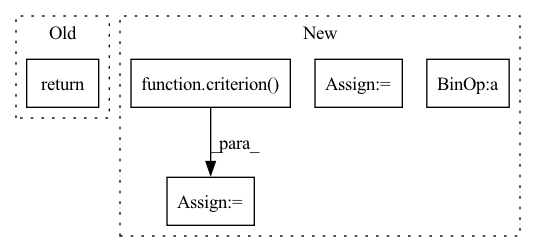

Pattern ID :15126
Before Change
prediction = output.argmax(dim=1, keepdim=True) // 将one-hot输出转为单个标量
correct = prediction.eq(target.view_as(prediction)).sum().item() // 比较得到准确率
return train_loss,correct
// return train_loss / len(train_loader), correct / len(train_loader.dataset) // 返回平均损失和平均准确率After Change
//训练集测试
train_output = model(data.to(torch.float32)) // 计算输出
train_loss = criterion( train_output, target.to(torch.long)) .item() // 损失函数
prediction = train_output.argmax(dim=1, keepdim=True) // 将one-hot输出转为单个标量
correct = prediction.eq(target.view_as(prediction)).sum().item() // 比较得到准确率
train_acc=100. * correct/ len(data)
i+= 1
// print(f"batch: {i}, "f"Train set: loss: {train_loss:.4f}, "
// f"Accuracy: {correct}/{len(data)} ({train_acc:.2f}%)")In pattern: SUPERPATTERN
Frequency: 3
Non-data size: 5
Instances Fragment ID: 51318414
Project Name: jefffffu/awesome-differential-privacy-and-meachine-learning
Commit Name: 2ebbe536f3de4fe260e92dfa2a45dd3bab30a414
Time: 2022-12-06
Author: 1193147851@qq.com
File Name: train_and_validation/train.py
M Class Name: AnonimousClass
N Class Name: AnonimousClass
M Method Name: train(4)
N Method Name: train(4)
M Parent Class:
N Parent Class:
M File Name: train_and_validation/train.py
N File Name: train_and_validation/train.py
M Start Line: 10
M End Line: 26
N Start Line: 10
N End Line: 33
Before Change
prediction = output.argmax(dim=1, keepdim=True) // 将one-hot输出转为单个标量
correct = prediction.eq(target.view_as(prediction)).sum().item() // 比较得到准确率
return train_loss,correct
// return train_loss / len(train_loader), correct / len(train_loader.dataset) // 返回平均损失和平均准确率After Change
train_loss = 0.0
i=0
for data, target in train_loader: // batch之前组装到data数据集里的,pytorch的MBDG统一用这种方式进行,会按序列一个个btach训练
output = model(data.to(torch.float32)) // 计算输出
loss = criterion(output, target.to(torch.long)) // 损失函数
optimizer.zero_grad() // 梯度情况
loss.backward() // 梯度求导
optimizer.step() // 参数优化更新
//训练集测试
train_output = model(data.to(torch.float32)) // 计算输出
train_loss = criterion( train_output, target.to(torch.long)) .item() // 损失函数
prediction = train_output.argmax(dim=1, keepdim=True) // 将one-hot输出转为单个标量
correct = prediction.eq(target.view_as(prediction)).sum().item() // 比较得到准确率
train_acc=100. * correct/len(data)
i+= 1
// print(f"batch: {i}, "f"Train set: loss: {train_loss:.4f}, "
// f"Accuracy: {correct}/{len(data)} ({train_acc:.2f}%)") Fragment ID: 51318413
Project Name: jefffffu/awesome-differential-privacy-and-meachine-learning
Commit Name: 2ebbe536f3de4fe260e92dfa2a45dd3bab30a414
Time: 2022-12-06
Author: 1193147851@qq.com
File Name: train_and_validation/train.py
M Class Name: AnonimousClass
N Class Name: AnonimousClass
M Method Name: train(4)
N Method Name: train(4)
M Parent Class:
N Parent Class:
M File Name: train_and_validation/train.py
N File Name: train_and_validation/train.py
M Start Line: 10
M End Line: 26
N Start Line: 10
N End Line: 33
Before Change
for key in metrics:
metric = CLASSIFICATION_METRICS[key]()
response[metric.name] = metric.calculate(y_true, y_pred)
return response
def load_optimizer(self):
Load the optimizerAfter Change
outputs = self.predict(images.to(self.device))
if criterion:
batch_loss = criterion( outputs, labels.to(self.device))
total_loss += batch_loss.item()
total += 1
_, predicted = torch.max(outputs.data, 1)
y_pred += list(predicted.cpu().numpy())
y_true += list(labels.cpu().numpy())
calculated_metrics = {}
for metric_cls in metrics:
metric = metric_cls()
calculated_metrics[metric.name] = metric.calculate(y_true, y_pred)
if criterion:
total_loss = total_loss / total
return (calculated_metrics, y_true, y_pred, total_loss)
Fragment ID: 51318420
Project Name: biasvariancelabs/aitlas
Commit Name: 911a3c5d4be59008b2baaf45a32af55840b8586c
Time: 2020-09-26
Author: ivan.kitanovski@gmail.com
File Name: aitlas/base/classifiers.py
M Class Name: BaseClassifier
N Class Name: BaseClassifier
M Method Name: evaluate_model(4)
N Method Name: evaluate_model(3)
M Parent Class: BaseModel
N Parent Class: BaseModel
M File Name: aitlas/base/classifiers.py
N File Name: aitlas/base/classifiers.py
M Start Line: 125
M End Line: 145
N Start Line: 138
N End Line: 179
Before Change
// Print evaluation indicators.
print(f"Epoch[{epoch + 1:04d}] avg PSNR: {avg_psnr:.2f}.\n")
return avg_psnr
def main():After Change
with torch.no_grad():
end = time.time()
for index , (lr, hr) in enumerate(valid_dataloader):
lr = lr.to(config.device, non_blocking=True)
hr = hr.to(config.device, non_blocking=True)
// Mixed precision
with amp.autocast():
sr = model(lr)
loss = criterion( sr, hr)
// measure accuracy and record loss
psnr = 10. * torch.log10(1. / torch.mean((sr - hr) ** 2))
losses.update(loss.item(), lr.size(0))
psnres.update(psnr.item(), lr.size(0))
// measure elapsed time
batch_time.update(time.time() - end)
end = time.time()
if index % config.print_frequency == 0:
progress.display(index) Fragment ID: 51318418
Project Name: lornatang/vdsr-pytorch
Commit Name: 5091c519595825293d2807e74173657b5dbe83a4
Time: 2021-11-24
Author: liuchangyu1111@gmail.com
File Name: train.py
M Class Name: AnonimousClass
N Class Name: AnonimousClass
M Method Name: validate(5)
N Method Name: validate(4)
M Parent Class:
N Parent Class:
M File Name: train.py
N File Name: train.py
M Start Line: 124
M End Line: 145
N Start Line: 207
N End Line: 243